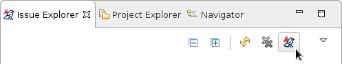
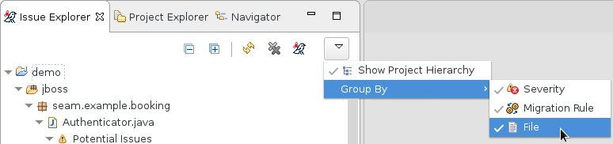

Getting Started with the Windup Plugin
Identify and Resolve Migration Issues with Windup
Run Windup against your project to identify and fix migration issues.
-
Import the project to analyze.
-
Create a Windup run configuration. From the Issue Explorer, press the Windup button ().

At a minimum, select the project to analyze. Set additional options as needed.
-
Click Run to execute Windup.
-
Review Windup issues listed in the Issue Explorer.
-
Resolve Windup issues by manually updating code or by using quick fixes when available.
-
Run Windup again as necessary. Use the drop down next to the Run button ( ) to run an existing configuration.
) to run an existing configuration.
Create a Windup Run Configuration
A Windup run configuration can be created using the Windup button (). You can create multiple run configurations, each with a unique name.
Input
Select a migration path. This determines which Windup rulesets are used. The migration path defaults to Anything to EAP 7, but can target EAP 6 or specify a particular source.
Select one or more projects to analyze. Hold the Ctrl key to select multiple projects in the list.
Select one or more packages to scan. It is recommended to select only those packages that you need to analyze to reduce the overall Windup execution time. If no packages are selected, all packages in the project will be scanned. Hold the Ctrl key to select multiple packages in the list.
Options
Generate a Windup report. Check the Generate Report checkbox if you want to generate the Windup HTML report. The report will be shown in the Windup Report tab and can be found in the Issue Explorer when you group by File.
Add a custom rules directory if you have any custom Windup rules.
Set additional Windup options. See the Windup User Guide for a description of each Windup argument.
Review Windup Issues
Use the Issue Explorer to review migration issues identified by Windup. Different icons indicate the issue's severity and state.
Change how issues are grouped by adjusting the Group By selections: Severity, Migration Rule, File.

Double-click the Windup issue in the Issue Explorer to open the associated line of code in an editor. Right-click and select Issue Details to view information about the Windup issue, including its severity and how to address it.
Resolve Windup Issues
You can resolve Windup issues by updating the code manually or by applying a quick fix when available.
Manual Update
Review the Windup issue details and additional resources and update the source code as necessary. Once a manual update has been made, the Windup issue will be marked stale until the next time that Windup is run on the project. You can also manually mark a Windup issue as fixed.
Quick Fix
Some Windup issues provide a quick fix, which assists in making the necessary edits to address the issue.
Preview a Quick Fix
Right-click the issue and select Preview Quick Fix. This will bring up a window that allows you to preview the change. From here, you can apply the fix or close the window.
Apply a Quick Fix
Right-click the issue and select Apply Quick Fix. This will update the source code as required and will mark the Windup issue as resolved.
Windup Issue Legend
Additional Resources